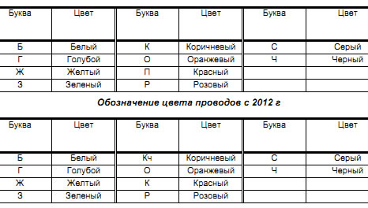

Электрооборудование
| На автомобиле применено электрооборудование постоянного тока с номинальным напряжением 12 В. |
| Электрооборудование автомобиля выполнено по однопроводной схеме – отрицательные выводы источников и потребителей электроэнергии соединены с «массой», которая выполняет функцию второго провода. В свою очередь, роль «массы» выполняет кузов автомобиля. |
| Большинство цепей включается выключателем зажигания. Всегда включены (независимо от положения ключа в выключателе зажигания): контрольная лампа автомобильной противоугонной системы, блокировка замков дверей, сигнализация дальним светом фар, сигналы торможения, наружное освещение, плафоны освещения салона и индивидуальной подсветки, аварийная сигнализация, звуковой сигнал и подкапотная лампа. |
Обозначения цвета проводов

| Из всех неисправностей, чаще всего при повседневной эксплуатации автомобиля встречаются неисправности электрического оборудования. По объективным причинам ремонт электрооборудования должны проводить квалифицированные специалисты автосервиса. |
| Неисправность электрооборудования (короткое замыкание) может привести к возгоранию электропроводки и пожару. |
|
| Если перегорел предохранитель – замените его, повторное перегорание того же предохранителя служит сигналом для немедленного ремонта соответствующего элемента электрооборудования. |
| Категорически запрещается заменять перегоревший предохранитель другим, с большим «номиналом», или «жучком». |
|
| Чтобы облегчить поиск неисправностей, приобретите схему электрооборудования вашего автомобиля. |
Любые работы с электрооборудованием автомобиля производите только при отключенной аккумуляторной батарее.
Отсоединять или подсоединять аккумуляторную батарею можно только при выключенном зажигании.
При проверке цепей электрооборудования запрещается замыкать на «массу» провода (проверять исправность цепей «на искру»), так как это может привести к выходу из строя элементов электрооборудования.
Запрещается применять предохранители, не предусмотренные конструкцией автомобиля или рассчитанные на больший ток, а также использовать вместо предохранителей проволоку.
При замене предохранителей запрещается применять отвертки и металлический инструмент, так как это может привести к короткому замыканию в цепях электрооборудования.
Запрещается отсоединять аккумуляторную батарею на работающем двигателе, так как это приведет к выходу из строя регулятора напряжения и элементов электронного оборудования автомобиля.
Во избежание выхода из строя диодов выпрямительного блока запрещается проверять их мегомметром или контрольной лампой, питаемой напряжением более 12 В, а также проверять такими приборами цепи электрооборудования на автомобиле без отсоединения проводов от генератора.
Проверять сопротивление изоляции обмотки статора генератора повышенным напряжением необходимо на генераторе, снятом с автомобиля, при отсоединенных от выпрямительного блока выводах обмотки статора.
При проведении электросварочных работ на автомобиле необходимо отсоединять провода от клемм аккумуляторной батареи и генератора.
Не касайтесь элементов системы зажигания и высоковольтных проводов на работающем двигателе.
Запрещается проверять работоспособность системы зажигания «на искру» между наконечниками высоковольтных проводов и «массой», так как это приведет к выходу из строя элементов электронного оборудования.
Не прокладывайте провода низкого напряжения в одном жгуте с высоковольтными.
Регулярно очищайте клеммы аккумуляторной батареи и наконечники проводов от окислов и грязи.
При подзарядке аккумуляторной батареи с помощью зарядного устройства отсоедините провода от клемм батареи |
|
Видео